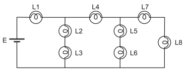

121. (Enem 2009)
O manual de instruções de um aparelho de ar-condicionado apresenta a seguinte tabela, com dados técnicos para diversos modelos. Considere que um auditório possua capacidade para 40 pessoas, cada uma produzindo uma quantidade média de calor, e que praticamente todo o calor que flui para fora do auditório o faz por meio dos aparelhos de ar-condicionado. Nessa situação, entre as informações listadas, aquelas essenciais para determinar quantos (e quais) aparelhos de ar-condicionado são precisos para manter, com lotação máxima, a temperatura interna do auditório agradável e constante, bem como determinar a espessura da fiação do circuito elétrico para a ligação desses aparelhos, são

1) Para dimensionar quantos aparelhos serão necessários, é indispensável conhecer a:
2) Para dimensionar a fiação (bitola), é indispensável conhecer a:
3) No contexto do problema, considera-se o:
Assinale a alternativa correta: